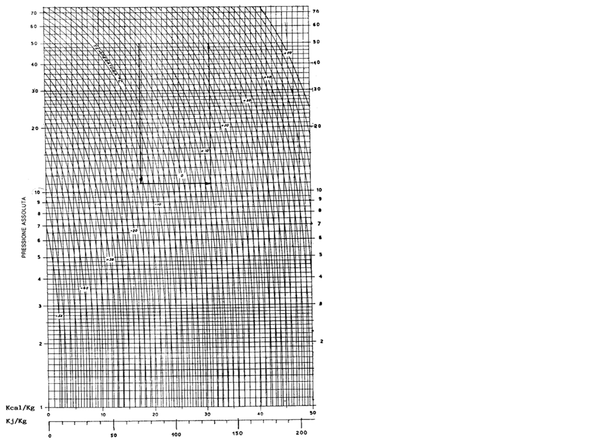

Preriscaldatori & Caldaia
Tools / Dimensionamenti / Metano / Preriscaldatore + Caldaia
Dati di ingresso — Gas Naturale
CONDIZIONI OPERATIVE
PARAMETRO AVANZATO — Effetto Joule-Thomson
Dati circuito acqua calda
CALDAIA — parametri
Analisi Joule-Thomson — Effetto espansione
Risultati — Preriscaldatore
Circuito acqua preriscaldatore
Risultati — Caldaia
Diagramma entalpia–pressione del gas naturale (Mollier GN) — Codice di Rete SNAM p. 408. I punti ①②③ sono calcolati automaticamente dal tool e sovrapposti al diagramma ufficiale. Il salto entalpico Δh tra Stato 1 e Stato 2 rappresenta il calore da fornire nel preriscaldatore.

Diagramma ufficiale dal Codice di Rete SNAM (ρs = 0,70 kg/m³). I punti sono posizionati tramite modello termico JT calibrato.
Schema funzionale dell'impianto di preriscaldo gas con caldaietta di produzione acqua calda. I valori numerici si aggiornano con i dati inseriti nel calcolo.
1 — Potenza termica preriscaldatore
La potenza necessaria al preriscaldamento del gas si ricava dal salto entalpico letto sul diagramma Mollier del gas naturale, moltiplicato per la portata massica:
Dove: Δh = salto entalpico [kcal/kg] letto sul diagramma tra lo stato iniziale e lo stato finale dell'espansione isoentalpia; ρs = densità standard del GN [kg/m³]; Q = portata [Sm³/h]; η = rendimento del preriscaldatore [-].
2 — Portata massica acqua e DN tubazione
Il DN commerciale viene scelto dalla serie EN 10216-1 / EN 10255 per il valore immediatamente superiore al diametro teorico calcolato. Fonte: EN 10216-1:2013 — Tubi d'acciaio senza saldatura per impiego in pressione.
3 — Potenza caldaia e portata gas
4 — Lettura diagramma Mollier GN (h–P)
Il diagramma entalpia–pressione del gas naturale (analogo al diagramma di Mollier per i fluidi) permette di quantificare il raffreddamento Joule-Thomson durante l'espansione.
La procedura di lettura del diagramma SNAM prevede: (1) individuare il punto di ingresso (Pin, Tin); (2) seguire la linea isoentalpia fino alla pressione di uscita; (3) leggere la temperatura di arrivo Tout,no-prer; (4) determinare Δh come differenza di entalpia tra lo stato preriscaldato e quello senza preriscaldo. Tab «Diagramma h–P» per visualizzazione interattiva.
5 — Riferimenti normativi e bibliografici
Codice di Rete SNAM — Ed. 2022, Cap. 5 «Impianti di riduzione della pressione» — diagramma h–P a p. 408, valori di ηprer e ρs.
UNI 11528:2014 — «Impianti a gas — progettazione, installazione e messa in servizio» — prescrizioni sui preriscaldatori in impianti di riduzione.
EN 10216-1:2013 — Serie DN tubazioni acciaio senza saldatura per uso in pressione.
ASHRAE Fundamentals Handbook 2021 — Cap. 1 — proprietà termofisiche gas naturale (cp, ρ).
Kidnay, Parrish, McCartney — "Fundamentals of Natural Gas Processing", 3ª ed., CRC Press 2019 — effetto Joule-Thomson, cap. 4.
UNI EN ISO 13443:2005 — «Gas naturale — Condizioni di riferimento standard»: Ts=288,15 K, Ps=1,01325 bar.